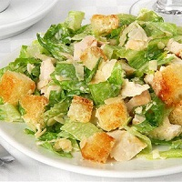

|  |
"Цезарь", как он есть |
|
Как приготовить "Салат "Цезарь" классический"
|
|
|
Готовка: Итак, вот - все необходимые нам ингредиенты. Сразу сделаю оговорку: я использовал уже готовый соус Цезарь (мне привезли из Европы, что-то похожее продается и у нас), однако если у вас его нет - соус для цезаря можно приготовить и самому. На этом сайте есть рецепт. Листья салата я использовал свежие, собственноручно выращенные на своей даче. Салат должен быть максимально свежим и качественным, чтобы Цезарь получился вкусным. Кусок куриного филе целиком необходимо обжарить на сковороде-гриль, ну или на обычной сковороде. Примерно по 3-4 минуты с каждой стороны, до образования уверенной корочки. Внутри мясо должно оставаться сочным. Яйца отвариваем вкрутую и нарезаем слайсами. Повторюсь, соус и крутоны у меня уже готовые, однако если у вас их нет - крутоны можно приготовить путем поджаривания небольших кусочков хлеба на сухой сковороде или запекания их в духовке, а рецепт соуса для цезаря есть на этом сайте. Пармезан натираем на самой мелкой терке, петрушку хорошенько промываем. Листья салата на минуту окатываем ледяной водой, после чего воду сливаем, даем листьям обсохнуть, и руками рвем их на произвольные кусочки (кому как больше нравится - кому-то крупнее, кому-то мельче). Куриное филе тоже нарезаем на красивые слайсы или кусочки другой формы, главное - не мельчить. Кусочки курицы должны быть довольно крупными. Петрушку рвем руками или измельчаем. Но, опять же, не мельчите - она должна чувствоваться в салате. Дело за малым. На дно салатницы выкладываем листья салата и петрушку, добавляем соус для цезаря и немного пармезана, перемешиваем. Сверху выкладываем нарезанные яйца, курицу и сухарики, а затем присыпаем все блюдо пармезаном. Готово! |
|
{kind=link}